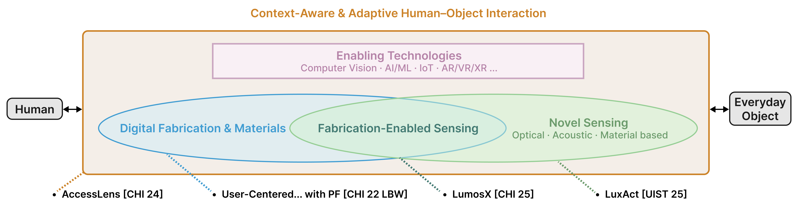
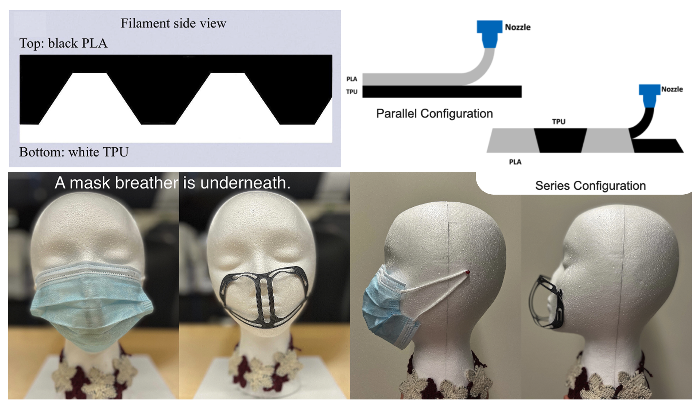

About Me
Human–Computer Interaction · Novel Sensing · Digital Fabrication · Interactive Physical Systems
I am a fourth year Ph.D. student in Computer Science at Texas A&M University, where I work in the HCI Engineering & Design (HCIED) Lab, under the guidance of Dr. Jeeeun Kim. My research explores how everyday objects can be designed to sense, respond to, and adapt to human activities.
I develop novel sensing and interaction techniques by exploring how different physical mechanisms and digitally fabricated structures can create new sensing capabilities. Building on these techniques, I integrate enabling technologies such as computer vision, AI/ML, IoT, and AR/VR/XR to support context-aware interactions between humans and everyday objects.

News
- Oct. 2025 - I passed my PhD prelim exam!
- Aug. 2025 - One paper accepted at UIST'25.
- Jan. 2025 - My first first-authored full paper accepted at CHI'25!
- Jan. 2024 - One paper accepted at CHI'24.
- Jan. 2023 - Started my PhD life at Texas A&M!
- May. 2022 - Presented my LBW paper virtually at CHI'22.
- Feb. 2022 - My first LBW poster accepted at CHI'22!
- Feb. 2022 - My first time entering industry as a full-time software engineer.
- Dec. 2021 - I graduated from Texas A&M with B.S. Computer Science!
Publications

LuxAct: Enhance Everyday Objects for Visual Sensing with Interaction-Powered Illumination (UIST'25)
Xiaoying Yang, Qian Lu, Jeeeun Kim, Yang Zhang
A self-powered, ultra-low-cost system that lets everyday objects encode interaction and sensor data into RGB light patterns that AR headsets can read, enabling rich, ubiquitous sensing without embedded electronics.
DOI |
LumosX: 3D Printed Anisotropic Light-Transfer (CHI'25)
Qian Lu, Xiaoying Yang, Xue Wang, Jacob Sayono, Yang Zhang, Jeeeun Kim
A set of novel techniques for encoding and decoding information through light reflection changes using 3D-printed optical anisotropic properties.
DOI |![The figure shows a flowchart from left to right. On the left, there is a 5 by 6 grid of images with a bounding box around an item in each image, all from AccessDB and AccessReal. The grid then points to a network icon labeled Inaccessibility Detector, which points to a mobile phone screen that has an image of a bathroom, with bounding boxes around several items in the photo. One of the bounding boxes around the outlet on the wall has an arrow pointing to another diagram that has assistive designs from AccessMeta sorted in three rows: Actuation, Indication, and Constraint from top to bottom.](publications/accessLens/paperImg.png)
AccessLens: Auto-detecting Inaccessibility of Everyday Objects (CHI'24)
Nahyun Kwon, Qian Lu, Muhammad Hasham Qazi, Joanne Liu, Changhoon Oh, Shu Kong, Jeeeun Kim
An end-to-end system designed to identify inaccessible interfaces in daily objects, and recommend 3D-printable augmentations for accessibility enhancement.
DOI |
User-Centered Property Adjustment with Programmable Filament (CHI'22 LBW)
Qian Lu, Aryabhat Darnal, Haruki Takahashi, Anastasia Hanifah Muliana, Jeeeun Kim
An exploration of using Programmable Filament to customize the mechanical properties of 3D-printed objects for individual users' needs.
DOI